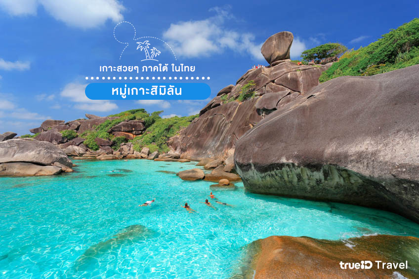

หมู่เกาะสิมิลัน พังงา
ที่สุดของทะเลไทยต้องยกให้หมู่เกาะสิมิลัน ซึ่งตั้งอยู่ในอุทยานแห่งชาติหมู่เกาะสิมิลัน จังหวัดพังงา นักท่องเที่ยวทั่วโลกต่างก็ยกให้ที่นี่เป็น “เกาะสวรรค์” เลยทีเดียวเพราะน้ำทะเลที่ใสราวกระจก ดูเผินๆเหมือนเรือกำลังลอยอยู่กลางมหาสมุทร
จุดชมวิวที่ห้ามพลาดเลยก็คือจุดชมวิวหินเรือใบ เรียกได้ว่า เป็นแลนด์มาร์คของการมาเที่ยวสิมิลันเลยทีเดียวนอกจากนี้ใต้ทะเลของหมู่เกาะสิมิลันนั้น ยังเต็มไปด้วยปะการังที่สวยงามและสัตวน้ำนานาชนิด เป็นหมู่เกาะที่อุดมสมบูรณ์มากๆ อีกแห่งของไทยเราเลยทีเดียว